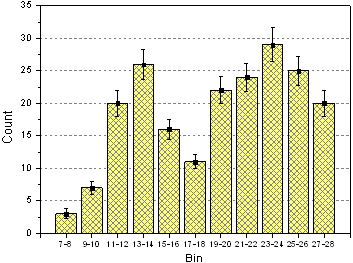
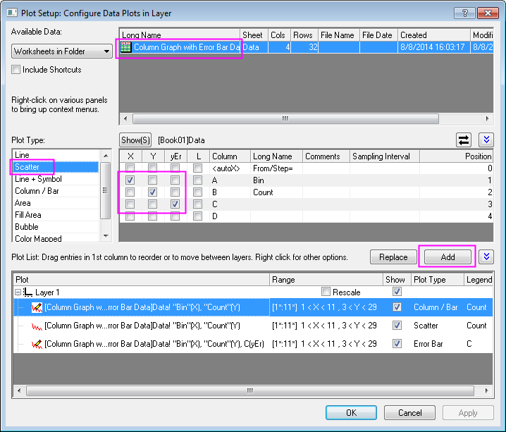
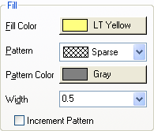
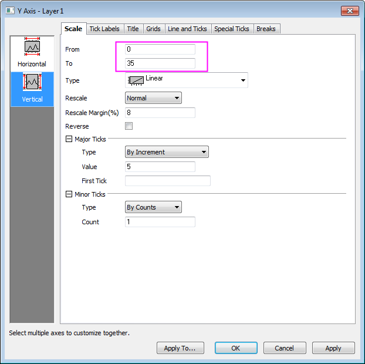
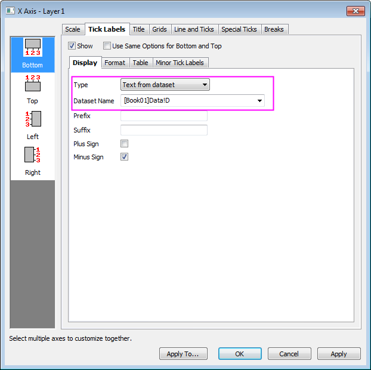
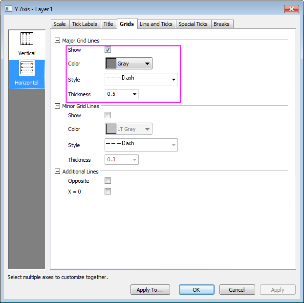

Säulendiagramm mit Fehlerbalken
ColumnGraph-ErrorBar
Zusammenfassung
Dieses benutzerdefinierte Diagramm zeigt das Beispiel eines Balkendiagramms mit hinzugefügten Fehlerbalken. Die gleichen Y-Daten werden zweimal gezeichnet, einmal als Punktdiagramm und einmal als Säulendiagramm. Die Fehlerbalken werden in diesem Fall an das Punktdiagramm angehängt. Fehlerbalken können im Diagramm sowohl in Y- als auch in X-Richtung eingebunden werden.
- 
Origin-Version mind. erforderlich: 2015 SR0
Was Sie lernen werden
- Säulendiagramm erstellen und benutzerdefiniert anpassen
- Dialog Diagrammeinstellungen zum Hinzufügen einer neuen Zeichnung in Ihr Diagramm verwenden
Schritte
Dieses Tutorial basiert auf dem Projekt: <Origin-Verzeichnis>\Samples\Tutorial Data.opj. (Wenn Sie keine Projektdatei haben, laden Sie die Datendatei bitte hier herunter.)
- Öffnen Sie Tutorial Data.opj und navigieren Sie zu dem Ordner Column Graph with Error Bar. Aktivieren Sie das Arbeitsblatt und stellen Sie sicher, dass die Zuweisungen der Spalten X, Y, Y-Fehler und Beschriftung entspricht.
- Markieren Sie Spalte 2 und wählen Sie Zeichnen: Einfache 2D: Säulendiagramm, um ein Säulendiagramm zu erstellen.
- Wählen Sie bei aktivem Diagrammfenster Grafik: Setup Diagramm, um den Dialog Diagrammeinstellungen aufzurufen. Klicken Sie doppelt auf das nach oben weisende Dreieck, um die oberen beiden Bedienfelder zu erweitern. Von diesem Dialog aus sollen die Punktdaten und die Fehlerbalken hinzugefügt werden, wie unten zu sehen:

 |
Um alle drei Bedienfelder im Dialog Diagrammeinstellungen anzuzeigen, erweitern Sie bitte das Bedienfeld Diagrammtyp, indem Sie auf  klicken, und erweitern Sie das Bedienfeld Verfügbare Daten, indem Sie erneut auf klicken. klicken, und erweitern Sie das Bedienfeld Verfügbare Daten, indem Sie erneut auf klicken.
Bitte lesen Sie unter Mit Hilfe des Dialogs Diagrammeinstellungen zeichnen weitere Informationen zu diesem Thema.
|
Klicken Sie auf die Schaltfläche Hinzufügen, um dem Säulendiagramm Punktdaten hinzuzufügen. Klicken Sie dann auf OK, um zum Fenster des Säulendiagramms zurückzukehren.
- Klicken Sie zum Aufrufen des Dialogs Details Zeichnung doppelt auf das Diagramm. Passen Sie das Diagramm mit den Optionen auf der Registerkarte Muster benutzerdefiniert an:

- Klicken Sie doppelt auf die Y-Achse, um den Dialog Achsen zu öffnen. Legen Sie die Skalierung der Y-Achse, wie im folgenden Bild zu sehen, fest:

- Gehen Sie dann zur Registerkarte Beschriftung der Hilfsstriche, um die Hilfsstrichsbeschriftung der X-Achse festzulegen:

- Wechseln Sie zur Registerkarte Gitternetze und klicken Sie auf das Symbol Horizontal im linken Bedienfeld, um die Gitternetze für Y-Achse benutzerdefiniert anzupassen. Blenden Sie die Hauptgitternetzlinien ein, indem Sie die Einstellungen, dem Bild unten entsprechend, duplizieren:

- Klicken Sie zuerst auf Anwenden. Halten Sie dann die Strg-Taste gedrückt, um beide Symbole, Vertikal und Horizontal, im linken Bedienfeld auszuwählen. Aktivieren Sie das Kontrollkästchen Gegenüber, um zusätzliche gegenüber liegende Linien sowohl für X- als auch für Y-Achse einzublenden.
- Klicken Sie auf OK, um diese Einstellungen anzuwenden und den Dialog Achsen zu schließen. Löschen Sie das Legendenobjekt.